Working with Categorical Data in Python
import pandas as pdadult=pd.read_csv("datasets/adult.csv")
used_cars=pd.read_csv("datasets/cars.csv")
dogs=pd.read_csv("datasets/ShelterDogs.csv")
lasvegas_trip=pd.read_csv("datasets/lasvegas_tripadvisor.csv")Chapter 1: Introduction to Categorical Data
Almost every dataset contains categorical information—and often it’s an unexplored goldmine of information. In this chapter, you’ll learn how pandas handles categorical columns using the data type category. You’ll also discover how to group data by categories to unearth great summary statistics.
Exploring a target variable
You have been asked to build a machine learning model to predict whether or not a person makes over $50,000 in a year. To understand the target variable, Above/Below 50k, you decide to explore the variable in more detail.
The Python package pandas will be used throughout this course and will be loaded as pd throughout. The adult census income dataset, adult, has also been preloaded for you. ### Instructions - Explore the Above/Below 50k variable by printing out a description of the variable’s contents. - Explore the Above/Below 50k variable by printing out a frequency table of the values found in this column. - Rerun .value_counts(), but this time print out the relative frequency values instead of the counts.
# Explore the Above/Below 50k variable
print(adult["Above/Below 50k"].describe())
# Print a frequency table of "Above/Below 50k"
print(adult["Above/Below 50k"].value_counts())
# Print relative frequency values
print(adult["Above/Below 50k"].value_counts(normalize=True))count 32561
unique 2
top <=50K
freq 24720
Name: Above/Below 50k, dtype: object
<=50K 24720
>50K 7841
Name: Above/Below 50k, dtype: int64
<=50K 0.75919
>50K 0.24081
Name: Above/Below 50k, dtype: float64Setting dtypes and saving memory
A colleague of yours is exploring a list of occupations and how they relate to salary. She has given you a list of these occupations, list_of_occupations, and has a few simple questions such as “How many different titles are there?” and “Which position is the most common?”. ### Instructions - Create a pandas Series, series1, using the list_of_occupations (do not set the dtype). - Print both the data type and number of bytes used of this new Series. - Create a second pandas Series, series2, using the list_of_occupations and set the dtype to “category”. - Print both the data type and number of bytes used of this new Series.
adult.columnsIndex(['Age', 'Workclass', 'fnlgwt', 'Education', 'Education Num',
'Marital Status', 'Occupation', 'Relationship', 'Race', 'Sex',
'Capital Gain', 'Capital Loss', 'Hours/Week', 'Country',
'Above/Below 50k'],
dtype='object')list_of_occupations = adult.Occupation# Create a Series, default dtype
series1 = pd.Series(list_of_occupations)
# Print out the data type and number of bytes for series1
print("series1 data type:", series1.dtype)
print("series1 number of bytes:", series1.nbytes)
# Create a Series, "category" dtype
series2 = pd.Series(list_of_occupations, dtype="category")
# Print out the data type and number of bytes for series2
print("series2 data type:", series2.dtype)
print("series2 number of bytes:", series2.nbytes)series1 data type: object
series1 number of bytes: 260488
series2 data type: category
series2 number of bytes: 32681Creating a categorical pandas Series
Another colleague at work has collected information on the number of “Gold”, “Silver”, and “Bronze” medals won by the USA at the Summer & Winter Olympics since 1896. She has provided this as a list, medals_won. Before taking a look at the total number of each medal won, you want to create a categorical pandas Series. However, you know that these medals have a specific order to them and that Gold is better than Silver, but Silver is better than Bronze. Use the object, medals_won, to help. ### Instructions - Create a categorical pandas Series without using pd.Series(). - Specify the three known medal categories such that “Bronze” < “Silver” < “Gold”. - Specify that the order of the categories is important when creating this Series.
medals_won = ['Silver',
'Silver',
'Bronze',
'Silver',
'Gold',
'Silver',
'Silver',
'Gold',
'Gold',
'Bronze',
'Bronze',
'Gold',
'Silver',
'Silver',
'Silver',
'Gold',
'Gold',
'Bronze']# Create a categorical Series and specify the categories (let pandas know the order matters!)
medals = pd.Categorical(medals_won,categories=["Bronze" , "Silver" , "Gold"],ordered=True)
print(medals)['Silver', 'Silver', 'Bronze', 'Silver', 'Gold', ..., 'Silver', 'Silver', 'Gold', 'Gold', 'Bronze']
Length: 18
Categories (3, object): ['Bronze' < 'Silver' < 'Gold']Setting dtype when reading data
You are preparing to create a machine learning model to predict a person’s income category using the adult census income dataset. You don’t have access to any cloud resources and you want to make sure that your laptop will be able to load the full dataset and process its contents. You have read in the first five rows of the dataset adult to help you understand what kind of columns are available. ### Instructions - Call the correct attribute on the adult DataFrame to review the data types. - Create a dictionary with keys: “Workclass”, “Education”, “Relationship”, and “Above/Below 50k”. Set the value for each key to be “category”. - Use the newly created dictionary, adult_dtypes, when reading in adult.csv
# Check the dtypes
print(adult.dtypes)
# Create a dictionary with column names as keys and "category" as values
adult_dtypes = {
"Workclass": "category",
"Education": "category",
"Relationship": "category",
"Above/Below 50k": "category"
}
# Read in the CSV using the dtypes parameter
adult2 = pd.read_csv(
"datasets/adult.csv",
dtype=adult_dtypes
)
print(adult2.dtypes)Age int64
Workclass object
fnlgwt int64
Education object
Education Num int64
Marital Status object
Occupation object
Relationship object
Race object
Sex object
Capital Gain int64
Capital Loss int64
Hours/Week int64
Country object
Above/Below 50k object
dtype: object
Age int64
Workclass category
fnlgwt int64
Education category
Education Num int64
Marital Status object
Occupation object
Relationship category
Race object
Sex object
Capital Gain int64
Capital Loss int64
Hours/Week int64
Country object
Above/Below 50k category
dtype: objectCreate lots of groups
You want to find the mean Age of adults when grouping by the following categories:
"Workclass" (which has 9 categories)
"Above/Below 50k" (which has 2 categories)
"Education" (which has 16 categories).You have developed the following bit of code:
gb = adult.groupby(by=[ “Workclass”, “Above/Below 50k”, “Education”])
How many groups are in the gb object and what is the maximum possible number of groups that could have been created? The dataset adult, and the gb object have been preloaded for you.
gb = adult.groupby(by=[ "Workclass",
"Above/Below 50k",
"Education"])
print(gb.mean()) Age ... Hours/Week
Workclass Above/Below 50k Education ...
? <=50K 10th 33.357143 ... 32.744898
11th 32.372881 ... 31.711864
12th 30.736842 ... 34.236842
1st-4th 63.833333 ... 34.916667
5th-6th 53.642857 ... 35.821429
... ... ... ...
State-gov >50K Some-college 44.322581 ... 41.225806
Without-pay <=50K 7th-8th 65.000000 ... 50.000000
Assoc-acdm 62.000000 ... 50.000000
HS-grad 42.555556 ... 28.000000
Some-college 53.000000 ... 35.333333
[208 rows x 6 columns]Setting up a .groupby() statement
The gender wage gap is a hot-topic item in the United States and across the world. Using the adult census income dataset, loaded as adult, you want to check if some of the recently published data lines up with this income survey. ### Instructions - Split the adult dataset across the “Sex” and “Above/Below 50k” columns, saving this object as gb. - Print out the number of observations found in each group. - Using gb, find the average of each numerical column.
# Group the adult dataset by "Sex" and "Above/Below 50k"
gb = adult.groupby(by=["Sex" , "Above/Below 50k"])
# Print out how many rows are in each created group
print(gb.size())
# Print out the mean of each group for all columns
print(gb.mean())Sex Above/Below 50k
Female <=50K 9592
>50K 1179
Male <=50K 15128
>50K 6662
dtype: int64
Age fnlgwt ... Capital Loss Hours/Week
Sex Above/Below 50k ...
Female <=50K 36.210801 185999.381359 ... 47.364470 35.916701
>50K 42.125530 183687.406277 ... 173.648855 40.426633
Male <=50K 37.147012 193093.609268 ... 56.806782 40.693879
>50K 44.625788 188769.101321 ... 198.780396 46.366106
[4 rows x 6 columns]Using pandas functions effectively
You are creating a Python application that will calculate summary statistics based on user-selected variables. The complete dataset is quite large. For now, you are setting up your code using part of the dataset, preloaded as adult. As you create a reusable process, make sure you are thinking through the most efficient way to setup the GroupBy object. ### Instructions - Create a list of the names for two user-selected variables: “Education” and “Above/Below 50k”. - Create a GroupBy object, gb, using the user_list as the grouping variables. - Calculate the mean of “Hours/Week” across each group using the most efficient approach covered in the video.
# Create a list of user-selected variables
user_list = ["Education" , "Above/Below 50k"]
# Create a GroupBy object using this list
gb = adult.groupby(by=user_list)
# Find the mean for the variable "Hours/Week" for each group - Be efficient!
print(gb["Hours/Week"].mean())Education Above/Below 50k
10th <=50K 36.574053
>50K 43.774194
11th <=50K 33.322870
>50K 45.133333
12th <=50K 35.035000
>50K 44.818182
1st-4th <=50K 37.864198
>50K 48.833333
5th-6th <=50K 38.539432
>50K 46.000000
7th-8th <=50K 38.830033
>50K 47.500000
9th <=50K 37.667351
>50K 44.851852
Assoc-acdm <=50K 39.264339
>50K 44.256604
Assoc-voc <=50K 40.817826
>50K 43.853186
Bachelors <=50K 40.586152
>50K 45.475462
Doctorate <=50K 45.429907
>50K 47.513072
HS-grad <=50K 39.727510
>50K 45.042985
Masters <=50K 41.223822
>50K 45.917623
Preschool <=50K 36.647059
Prof-school <=50K 42.816993
>50K 49.092199
Some-college <=50K 37.450203
>50K 44.820476
Name: Hours/Week, dtype: float64Chapter 2: Categorical pandas Series
Now it’s time to learn how to set, add, and remove categories from a Series. You’ll also explore how to update, rename, collapse, and reorder categories, before applying your new skills to clean and access other data within your DataFrame.
Adding categories
The owner of a local dog adoption agency has listings for almost 3,000 dogs. One of the most common questions they have been receiving lately is: “What type of area was the dog previously kept in?”. You are setting up a pipeline to do some analysis and want to look into what information is available regarding the “keep_in” variable. Both pandas, as pd, and the dogs dataset have been preloaded. ### Instructions - Print the frequency of the responses in the “keep_in” variable and make sure the count of NaN values are shown. - Convert the “keep_in” variable to a categorical Series. - Add the list of new categories provided by the adoption agency, new_categories, to the “keep_in” column. - Print the frequency counts of the keep_in column and do not drop NaN values.
# Check frequency counts while also printing the NaN count
print(dogs["keep_in"].value_counts(dropna=False))
# Switch to a categorical variable
dogs["keep_in"] = dogs["keep_in"].astype("category")
# Add new categories
new_categories = ["Unknown History", "Open Yard (Countryside)"]
dogs["keep_in"] = dogs["keep_in"].cat.add_categories(new_categories)
# Check frequency counts one more time
print(dogs["keep_in"].value_counts(dropna=False))both flat and garden 1224
NaN 1021
garden 510
flat 182
Name: keep_in, dtype: int64
both flat and garden 1224
NaN 1021
garden 510
flat 182
Unknown History 0
Open Yard (Countryside) 0
Name: keep_in, dtype: int64Removing categories
Before adopting dogs, parents might want to know whether or not a new dog likes children. When looking at the adoptable dogs dataset, dogs, you notice that the frequency of responses for the categorical Series “likes_children” looks like this:
maybe 1718 yes 1172 no 47
The owner of the data wants to convert all “maybe” responses to “no”, as it would be unsafe to let a family adapt a dog if it doesn’t like children. The code to convert all “maybe” to “no” is provided in Step 1. However, the option for “maybe” still remains as a category. Instructions - Print out the categories of the categorical Series dogs[“likes_children”]. - Print out the frequency table for “likes_children” to see if any “maybe” responses remain. - Remove the “maybe” category from the Series. - Print out the categories of “likes_children” one more time.
print(dogs.columns)Index(['ID', 'name', 'age', 'sex', 'breed', 'date_found', 'adoptable_from',
'posted', 'color', 'coat', 'size', 'neutered', 'housebroken',
'likes_people', 'likes_children', 'get_along_males',
'get_along_females', 'get_along_cats', 'keep_in'],
dtype='object')dogs["likes_children"] = dogs["likes_children"].astype("category")
# Set "maybe" to be "no"
dogs.loc[dogs["likes_children"] == "maybe", "likes_children"] = "no"
# Print out categories
print(dogs["likes_children"].cat.categories)
# Print the frequency table
print(dogs["likes_children"].value_counts())Index(['no', 'yes'], dtype='object')
yes 1172
no 47
Name: likes_children, dtype: int64dogs=pd.read_csv("datasets/ShelterDogs.csv")
print(dogs.likes_children.unique())
dogs["likes_children"] = dogs["likes_children"].astype("category")
# Print out categories
print(dogs["likes_children"].cat.categories)
# Remove the `"maybe" category
dogs["likes_children"] = dogs["likes_children"].cat.remove_categories(['no'])
print(dogs["likes_children"].value_counts())
# Print the categories one more time
print(dogs["likes_children"].cat.categories)[nan 'yes' 'no']
Index(['no', 'yes'], dtype='object')
yes 1172
Name: likes_children, dtype: int64
Index(['yes'], dtype='object')Renaming categories
The likes_children column of the adoptable dogs dataset needs an update. Here are the current frequency counts:
Maybe? 1718
yes 1172
no 47
Two things that stick out are the differences in capitalization and the ? found in the Maybe? category. The data should be cleaner than this and you are being asked to make a few changes. ### Instructions - Create a dictionary called my_changes that will update the Maybe? category to Maybe. - Rename the categories in likes_children using the my_changes dictionary. - Update the categories one more time so that all categories are uppercase using the .upper() method. - Print out the categories of the updated likes_children Series.
# Create the my_changes dictionary
my_changes={"Maybe?":"Maybe"}
# Rename the categories listed in the my_changes dictionary
dogs["likes_children"] = dogs["likes_children"].cat.rename_categories(new_categories=my_changes)
# Use a lambda function to convert all categories to uppercase using upper()
dogs["likes_children"] = dogs["likes_children"].cat.rename_categories(lambda c: c.upper())
# Print the list of categories
print(dogs["likes_children"].cat.categories)Index(['YES'], dtype='object')Collapsing categories
One problem that users of a local dog adoption website have voiced is that there are too many options. As they look through the different types of dogs, they are getting lost in the overwhelming amount of choice. To simplify some of the data, you are going through each column and collapsing data if appropriate. To preserve the original data, you are going to make new updated columns in the dogs dataset. You will start with the coat column. The frequency table is listed here:
short 1969
medium 565
wirehaired 220
long 180
medium-long 3
Instructions
- Create a dictionary named update_coats to map both wirehaired and medium-long to medium.
- Collapse the categories listed in this new dictionary and save this as a new column, coat_collapsed.
- Convert this new column into a categorical Series.
- Print the frequency table of this new Series.
# Create the update_coats dictionary
update_coats = {"wirehaired":"medium", "medium-long" : "medium"}
# Create a new column, coat_collapsed
dogs["coat_collapsed"] = dogs["coat"].replace(update_coats)
# Convert the column to categorical
dogs["coat_collapsed"]=dogs["coat_collapsed"].astype("category")
# Print the frequency table
print(dogs["coat_collapsed"].value_counts())short 1972
medium 785
long 180
Name: coat_collapsed, dtype: int64Reordering categories in a Series
The owner of a local dog adoption agency has asked you take a look at her data on adoptable dogs. She is specifically interested in the size of the dogs in her dataset and wants to know if there are differences in other variables, given a dog’s size. The adoptable dogs dataset has been loaded as dogs and the “size” variable has already been saved as a categorical column. ### Instructions - Print out the current categories of the “size” pandas Series. - Reorder categories in the “size” column using the categories “small”, “medium”, “large”, do not set the ordered parameter. - Update the reorder_categories() method so that pandas knows the variable has a natural order. - Add a argument to the method so that the “size” column is updated without needing to save it to itself.
dogs["size"] = dogs["size"].astype("category")
# Print out the current categories of the size variable
print(dogs["size"].cat.categories)
# Reorder the categories, specifying the Series is ordinal, and overwriting the original series
dogs["size"].cat.reorder_categories(
new_categories=["small", "medium", "large"],
ordered=True,#False
inplace=True
)Index(['large', 'medium', 'small'], dtype='object')Using .groupby() after reordering
It is now time to run some analyses on the adoptable dogs dataset that is focused on the “size” of the dog. You have already developed some code to reorder the categories. In this exercise, you will develop two similar .groupby() statements to help better understand the effect of “size” on other variables. dogs has been preloaded for you. ### Instructions - Print out the frequency table of “sex” for each category of the “size” column. - Print out the frequency table of “keep_in” for each category of the “size” column.
# Previous code
dogs["size"].cat.reorder_categories(
new_categories=["small", "medium", "large"],
ordered=True,
inplace=True
)
# How many Male/Female dogs are available of each size?
print(dogs.groupby('size')['sex'].value_counts())
# Do larger dogs need more room to roam?
print(dogs.groupby("size")["keep_in"].value_counts())size sex
small male 260
female 214
medium male 1090
female 854
large male 331
female 188
Name: sex, dtype: int64
size keep_in
small both flat and garden 238
flat 80
garden 21
medium both flat and garden 795
garden 317
flat 97
large both flat and garden 191
garden 172
flat 5
Name: keep_in, dtype: int64Cleaning variables
Users of an online entry system used to have the ability to freely type in responses to questions. This is causing issues when trying to analyze the adoptable dogs dataset, dogs. Here is the current frequency table of the “sex” column:
`male 1672
female 1249
MALE 10
FEMALE 5
Malez 1`
Now that the system only takes responses of “female” and “male”, you want this variable to match the updated system. ### Instructions - Update the misspelled response “Malez” to be “male” by creating the replacement map, replace_map. - Replace all occurrences of “Malez” with “male” by using replace_map. - Remove the leading spaces of the ” MALE” and ” FEMALE” responses. - Convert all responses to be strictly lowercase. - Convert the “sex” column to a categorical pandas Series.
# Fix the misspelled word
replace_map = {"Malez": "male"}
# Update the sex column using the created map
dogs["sex"] = dogs["sex"].replace(replace_map)
# Strip away leading whitespace
dogs["sex"] = dogs["sex"].str.strip()
# Make all responses lowercase
dogs["sex"] = dogs["sex"].str.lower()
# Convert to a categorical Series
dogs["sex"] = dogs.sex.astype("category")
print(dogs["sex"].value_counts())male 1681
female 1256
Name: sex, dtype: int64Accessing and filtering data
You are working on a Python application to display information about the dogs available for adoption at your local animal shelter. Some of the variables of interest, such as “breed”, “size”, and “coat”, are saved as categorical variables. In order for this application to work properly, you need to be able to access and filter data using these columns.
The ID variable has been set as the index of the pandas DataFrame dogs. ### Instructions - Print the “coat” value for the dog with an ID of 23807. - For dogs with a long “coat”, print the number of each “sex”. - Print the average age of dogs with a “breed” of “English Cocker Spaniel”. - Filter to the dogs with “English” in their “breed” name using the .contains() method.
dogs.head(10)|
|
ID |
name |
age |
sex |
breed |
date_found |
adoptable_from |
posted |
color |
coat |
size |
neutered |
housebroken |
likes_people |
likes_children |
get_along_males |
get_along_females |
get_along_cats |
keep_in |
coat_collapsed |
|---|---|---|---|---|---|---|---|---|---|---|---|---|---|---|---|---|---|---|---|---|
|
0 |
23807 |
Gida |
0.25 |
female |
Unknown Mix |
12/10/19 |
12/11/19 |
12/11/19 |
red |
short |
small |
no |
NaN |
NaN |
NaN |
NaN |
NaN |
NaN |
NaN |
short |
|
1 |
533 |
Frida És Ricsi |
0.17 |
female |
Unknown Mix |
12/1/19 |
12/1/19 |
12/9/19 |
black and white |
short |
small |
no |
NaN |
yes |
YES |
yes |
yes |
yes |
NaN |
short |
|
2 |
23793 |
NaN |
4.00 |
male |
Unknown Mix |
12/8/19 |
12/23/19 |
12/8/19 |
saddle back |
short |
medium |
no |
NaN |
NaN |
NaN |
NaN |
NaN |
NaN |
NaN |
short |
|
3 |
23795 |
NaN |
1.00 |
male |
Unknown Mix |
12/8/19 |
12/23/19 |
12/8/19 |
yellow-brown |
medium |
medium |
no |
NaN |
NaN |
NaN |
NaN |
NaN |
NaN |
NaN |
medium |
|
4 |
23806 |
Amy |
2.00 |
female |
French Bulldog Mix |
12/10/19 |
12/11/19 |
12/11/19 |
black |
short |
small |
no |
NaN |
NaN |
NaN |
NaN |
NaN |
NaN |
NaN |
short |
|
5 |
23801 |
Alex |
4.25 |
male |
Unknown Mix |
12/9/19 |
12/24/19 |
12/9/19 |
yellow-brown |
short |
small |
yes |
NaN |
NaN |
NaN |
NaN |
NaN |
NaN |
NaN |
short |
|
6 |
534 |
Ricsi És Frida |
0.17 |
male |
Unknown Mix |
12/1/19 |
12/1/19 |
12/9/19 |
brown |
short |
small |
no |
NaN |
yes |
YES |
yes |
yes |
yes |
NaN |
short |
|
7 |
23805 |
NaN |
0.17 |
female |
Unknown Mix |
12/10/19 |
12/25/19 |
12/11/19 |
gray and white |
short |
medium |
no |
NaN |
NaN |
NaN |
NaN |
NaN |
NaN |
NaN |
short |
|
8 |
23809 |
NaN |
0.17 |
female |
Unknown Mix |
12/11/19 |
12/26/19 |
12/12/19 |
black |
medium |
medium |
no |
NaN |
NaN |
NaN |
NaN |
NaN |
NaN |
NaN |
medium |
|
9 |
1801 |
Újhartyáni Mazsi |
0.17 |
female |
Unknown Mix |
12/10/19 |
12/10/19 |
12/11/19 |
brown and white |
short |
small |
no |
NaN |
yes |
YES |
yes |
yes |
yes |
flat |
short |
dogs=pd.read_csv("datasets/ShelterDogs.csv")
dogs.set_index(["ID"],inplace=True)
dogs.head(2)
# Print the category of the coat for ID 23807
print(dogs.loc[23807, "coat"])
# Find the count of male and female dogs who have a "long" coat
print(dogs.loc[dogs.coat=="long", 'sex'].value_counts())
# Print the mean age of dogs with a breed of "English Cocker Spaniel"
print(dogs.loc[dogs.breed=="English Cocker Spaniel", "age"].mean())
# Count the number of dogs that have "English" in their breed name
print(dogs[dogs["breed"].str.contains("English", regex=False)].shape[0])short
male 124
female 56
Name: sex, dtype: int64
8.186153846153847
35Chapter 3: Visualizing Categorical Data
In this chapter, you’ll use the seaborn Python library to create informative visualizations using categorical data—including categorical plots (cat-plot), box plots, bar plots, point plots, and count plots. You’ll then learn how to visualize categorical columns and split data across categorical columns to visualize summary statistics of numerical columns.
Creating a box plot
When people leave reviews for products, services, or destinations, people reading those reviews can sometimes mark the original review as helpful. If enough people mark the review as helpful, future readers of these reviews might be more likely to trust the content of the original review.
Using the reviews dataset, explore the continuous variable “Helpful votes” across the different categories found in the “Traveler type” variable.
Note that for the remainder of this chapter, seaborn as sns and matplotlib.pyplot as plt will be preloaded for you. ### Instructions - Set the font size of your graphic to be 1.25. - Set the background of the graphic to be “darkgrid”. - Create a boxplot using catplot() with “Helpful votes” as the continuous variable split across each “Traveler type”. Make sure that you are using the reviews dataset.
reviews=pd.read_csv("datasets/lasvegas_tripadvisor.csv")import seaborn as sns
import matplotlib.pyplot as plt
# Set the font size to 1.25
sns.set(font_scale=1.25)
# Set the background to "darkgrid"
sns.set_style('darkgrid')
# Create a boxplot
sns.catplot(x= "Traveler type",y="Helpful votes",data=reviews,kind='box')
plt.show()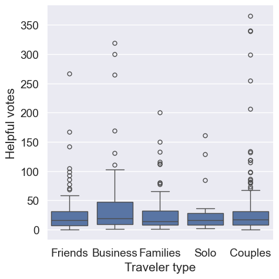
Creating a bar plot
Las Vegas hotels are seeing large variations in how helpful reviews appear to other people. The owners of these hotels are curious if there are times of the year when reviews have been more helpful to their potential guests. Help the owners understand their reviews better by creating a bar plot of the average number of helpful votes per review across the categorical variable “Period of stay”. The dataset reviews has been preloaded for you. ### Instructions - Print out the frequency counts of the variable “Period of stay” to make sure each category has data. - Create a bar plot using catplot(). - Split the reviews dataset on “Period of stay” across the x-axis. - Specify the numerical variable to aggregate on as “Helpful votes”.
# Print the frequency counts of "Period of stay"
print(reviews["Period of stay"].value_counts())
sns.set(font_scale=1.4)
sns.set_style("whitegrid")
# Create a bar plot of "Helpful votes" by "Period of stay"
sns.catplot(data=reviews,x="Period of stay",y="Helpful votes",kind='bar')
plt.show()Mar-May 128
Jun-Aug 126
Sep-Nov 126
Dec-Feb 124
Name: Period of stay, dtype: int64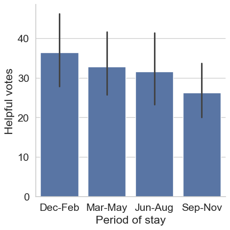
Ordering categories
Not all categories are created equal. In the hotel review dataset, reviews, hotel owners know that most of their customers are from North America. When visualizing data broken out by “User continent” they might want North America to appear first. An ordered list of user continents has been provided as continent_categories. In this exercise, you will work through preparing a visualization that is ordered by the frequency counts of a Series. ### Instructions - Create a bar chart with “User continent” along the x-axis and “Score” along the y-axis. - Print out the frequency counts of “User continent”. - Convert the “User continent” Series to a categorical and create a bar plot with “User continent” along the x-axis. - Reorder the “User continent” Series using the ordered list, continent_categories, and rerun the graphic.
# Create a bar chart
sns.set(font_scale=.9)
sns.set_style("whitegrid")
sns.catplot(x="User continent", y="Score", data=reviews, kind='bar')
plt.show()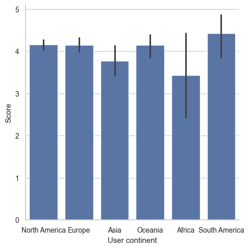
# Create a bar chart
sns.set(font_scale=.9)
sns.set_style("whitegrid")
sns.catplot(x="User continent", y="Score", data=reviews, kind="bar")
# Print the frequency counts for "User continent"
print(reviews["User continent"].value_counts())North America 295
Europe 118
Oceania 41
Asia 36
Africa 7
South America 7
Name: User continent, dtype: int64# Set style
sns.set(font_scale=.9)
sns.set_style("whitegrid")
# Print the frequency counts for "User continent"
print(reviews["User continent"].value_counts())
# Convert "User continent" to a categorical variable
reviews["User continent"] = reviews["User continent"].astype('category')
sns.catplot(x="User continent", y="Score", data=reviews, kind="bar")
plt.show()North America 295
Europe 118
Oceania 41
Asia 36
Africa 7
South America 7
Name: User continent, dtype: int64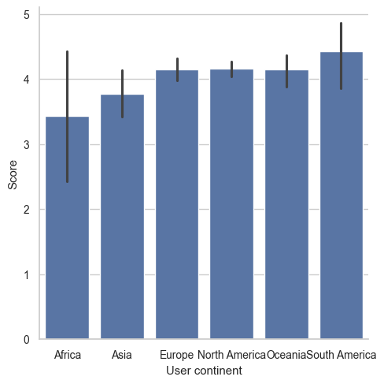
# Set style
sns.set(font_scale=.9)
sns.set_style("whitegrid")
# Print the frequency counts for "User continent"
print(reviews["User continent"].value_counts())
# Convert "User continent" to a categorical variable
reviews["User continent"] = reviews["User continent"].astype("category")
# Reorder "User continent" using continent_categories and rerun the graphic
continent_categories = list(reviews["User continent"].value_counts().index)
reviews["User continent"] = reviews["User continent"].cat.reorder_categories(new_categories=continent_categories)
sns.catplot(x="User continent", y="Score", data=reviews, kind="bar")
plt.show()North America 295
Europe 118
Oceania 41
Asia 36
Africa 7
South America 7
Name: User continent, dtype: int64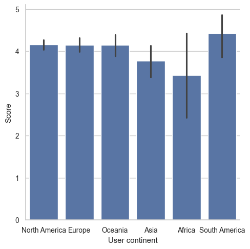
Bar plot using hue
Aggregating information across multiple categories is often necessary to help stakeholders better understand their data. In preparation for building a dashboard that will allow users to select up to two variables when creating visualizations, you want to test visualizations that use different combinations of categorical variables using a bar plot. ### Instructions - 1 Update the plot so that “Casino” (along the x-axis) and “Free internet” (to color the bars) are used to split the data. - 2 Switch the categories so that “Free internet” is on the x-axis and “Casino” is in the legend. - 3 Update the x parameter to be “User continent”. - 4 The font was too large for the last visualization - change the font size to 1.0.
# Add a second category to split the data on: "Free internet"
sns.set(font_scale=2)
sns.set_style("darkgrid")
sns.catplot(x="Casino", y="Score", data=reviews, kind="bar", hue="Free internet")
plt.show()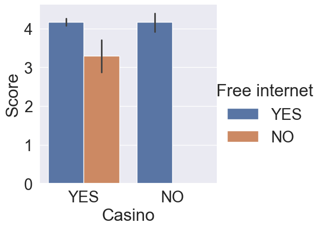
# Switch the x and hue categories
sns.set(font_scale=2)
sns.set_style("darkgrid")
sns.catplot(x='Free internet', y="Score", data=reviews, kind="bar", hue='Casino')
plt.show()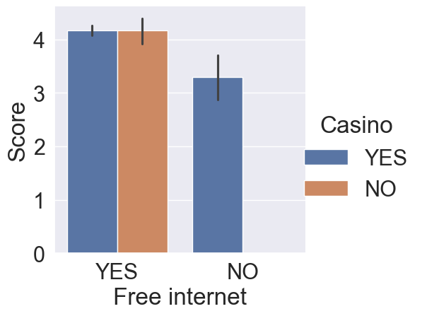
# Update x to be "User continent"
sns.set(font_scale=2)
sns.set_style("darkgrid")
sns.catplot(x="User continent", y="Score", data=reviews, kind="bar", hue="Casino")
plt.show()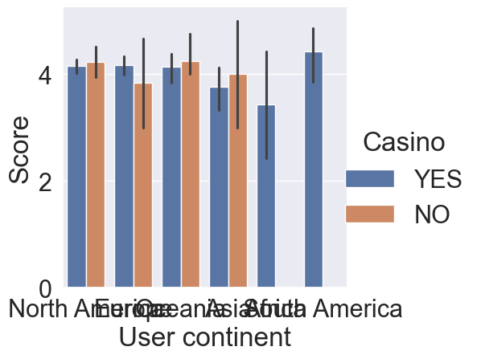
# Lower the font size so that all text fits on the screen.
sns.set(font_scale=1.0)
sns.set_style("darkgrid")
sns.catplot(x="User continent", y="Score", data=reviews, kind="bar", hue="Casino")
plt.show()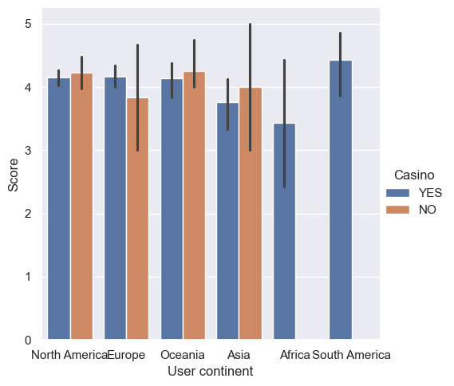
Creating a point plot
Creating helpful visualizations sometimes requires a lot of testing. You have been asked to create a visualization that shows the number of reviews, “Nr. reviews”, which is the number of reviews a reviewer has previously written, across a hotel’s star rating, “Hotel stars”. Since the number of reviews is numerical, you have decided to use a point plot to show the mean of the data across the categories. ### Instructions - Using the catplot() function, create a point plot. - Split the data across the x-axis using “Hotel stars”. - Specify the numerical variable to visualize to “Nr. reviews”. - Update the arguments so that any lines that appear do not overlap.
# Create a point plot with catplot using "Hotel stars" and "Nr. reviews"
sns.catplot(
# Split the data across Hotel stars and summarize Nr. reviews
x="Hotel stars",
y="Nr. reviews",
data=reviews,
# Specify a point plot
kind='point',
hue="Pool",
# Make sure the lines and points don't overlap
dodge=True
)
plt.show()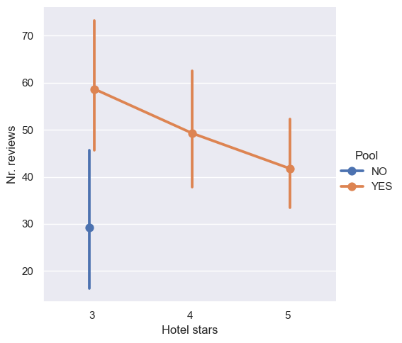
Creating a count plot
When creating quick analysis of frequency counts, you have been using .value_counts(). This is a great way for you to see the counts and get an idea of which categories are present in the data. However, sending frequency tables to clients or coworkers may not always be a good idea. For this exercise, you will visualize the number of reviews by their “Score”. Although “Score” has been used as a numerical variable in the past, it can be used as a categorical variable given that it has five unique values that are ordered from worst to best. The reviews dataset has been preloaded. ### Instructions - Use the catplot() function to display count frequencies using the reviews dataset. - Count the frequencies for the “Score” variable across the x-axis. - When counting the frequencies, color the bars using the “Traveler type” column.
sns.set(font_scale=1.4)
sns.set_style("darkgrid")
# Create a catplot that will count the frequency of "Score" across "Traveler type"
sns.catplot(
x="Score",kind="count",hue="Traveler type",data=reviews
)
plt.show()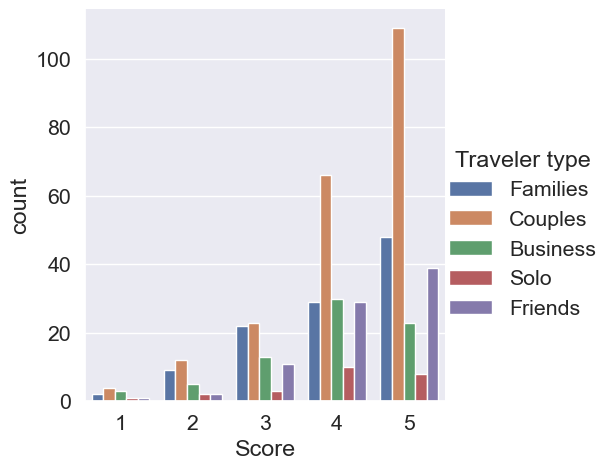
One visualization per group
While working on a data exploration project, you have been asked to visualize the number of reviews of hotels by “Period of stay” and by the day of the week, “Review weekday”. The goal of this visualization is to see what day of the week has the most reviews for each of the four periods of stay. The reviews dataset has been preloaded for you, as well as both seaborn, as sns, and matplotlib.pyplot as plt. ### Instructions - Create a catplot() using “count” as the type of graphic. - Count the number of reviews by “Review weekday”. - Create individual plots for each “Period of stay”. - Wrap the plots after every 2nd graphic.
# Create a catplot for each "Period of stay" broken down by "Review weekday"
ax = sns.catplot(
# Make sure Review weekday is along the x-axis
x="Review weekday",
# Specify Period of stay as the column to create individual graphics for
col="Period of stay",
# Specify that a count plot should be created
kind='count',
# Wrap the plots after every 2nd graphic.
col_wrap=2,
data=reviews
)
plt.show()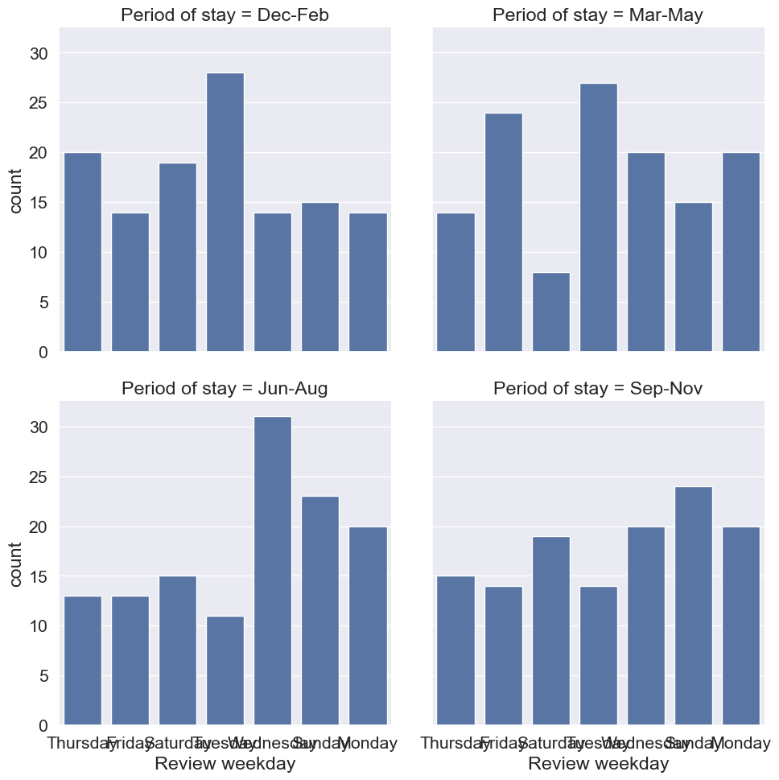
Updating categorical plots
Hotels are constantly working to get better reviews from their customers. A hotel chain has asked you to create visualizations to help the company understand why people might provide various ratings after staying at their hotels. A manager has asked if hotels with “Free internet” receive higher reviews given the “Traveler type”.
Creating visualizations is an iterative process. In this exercise, you will start with a basic graphic and iteratively add features until you have a finished product. The reviews dataset has been preloaded for you, as well as both seaborn, as sns, and matplotlib.pyplot as plt. ### Instructions - Adjust the color of the plot to be seaborn’s “Set2” palette. - Add the title “Hotel Score by Traveler Type and Free Internet Access”. - Update the axis labels to be “Free Internet” for the x-axis and “Average Review Rating” for the y-axis. - Adjust the starting height of the graphic to be 93% of the full visualization height.
# Adjust the color
ax = sns.catplot(
x="Free internet", y="Score",
hue="Traveler type", kind="bar",
data=reviews,
palette=sns.color_palette("Set2")
)
# Add a title
ax.fig.suptitle("Hotel Score by Traveler Type and Free Internet Access")
# Update the axis labels
ax.set_axis_labels("Free Internet", "Average Review Rating")
# Adjust the starting height of the graphic
plt.subplots_adjust(top=0.93)
plt.show()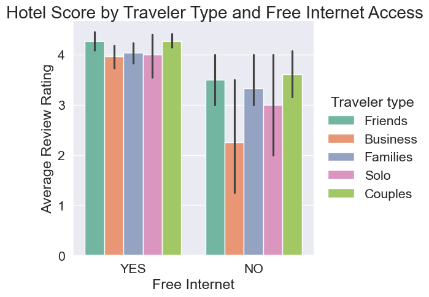
Chapter 4: Pitfalls and Encoding
Lastly, you’ll learn how to overcome the common pitfalls of using categorical data. You’ll also grow your data encoding skills as you are introduced to label encoding and one-hot encoding—perfect for helping you prepare your data for use in machine learning algorithms.
Overcoming pitfalls: string issues
Being able to effectively use categorical pandas Series is an important skill to have in your toolbelt. Unfortunately, there are several common problems that you may run into when using these Series.
In this exercise, you will work through code from a previous exercise on updating a categorical Series. Follow the instructions to make sure everything goes smoothly. The used cars dataset, used_cars, is loaded for you. ### Instructions - Print the frequency table of the “body_type” column for used_cars and include NaN values. - Update the .loc statement so that all NaN values in “body_type” are set to “other”. - Convert the “body_type” column to title case. - Check the dtype of the “body_type” column.
# Print the frequency table of body_type and include NaN values
print(used_cars["body_type"].value_counts(dropna=False))
# Update NaN values
used_cars.loc[used_cars["body_type"].isna(), "body_type"] = "other"
# Convert body_type to title case
used_cars["body_type"] = used_cars["body_type"].str.title()
# Check the dtype
print(used_cars["body_type"].dtype )sedan 13011
hatchback 7644
universal 5507
suv 5164
minivan 3608
minibus 1369
van 808
coupe 652
liftback 552
pickup 129
cabriolet 75
limousine 12
Name: body_type, dtype: int64
objectOvercoming pitfalls: using NumPy arrays
A local used car company manually appraises each car that they add to their inventory. When a new car comes in, they select from a drop-down menu, giving the car a rating between 1 and 5. A 1 means that the car probably won’t sell as is, but a 5 indicates the car will definitely sell without a problem.
With over 38,000 cars in their inventory, the company has asked you to give them an average “sellability” of their cars. For this exercise, use the used_cars dataset. The column of interest is called “Sale Rating” and it is currently a categorical column. ### Instructions - Print the frequency table of the “Sale Rating” column of the used_cars dataset. - Correct the second statement by converting the column to type int before calling .mean().
used_cars.dtypes
used_cars["engine_fuel"] = used_cars["engine_fuel"].astype("category")
used_cars["engine_fuel"] = used_cars["engine_fuel"].cat.codes# Print the frequency table of Sale Rating
print(used_cars["engine_fuel"].value_counts())
# Find the average score
average_score = used_cars["engine_fuel"].astype("int").mean()
# Print the average
print(average_score)3 24065
0 12872
2 1347
5 235
1 10
4 2
Name: engine_fuel, dtype: int64
1.9745659339233343Create a label encoding and map
A used car company believes that they can predict a car’s sales price reasonably well using their used_cars dataset. One of the variables they want to use, “color”, needs to be converted to codes. The company believes that a car’s color will be important when predicting sales price. ### Instructions - 1 Convert the color column to a categorical Series. - 2 Create a new column, “color_code”, by creating a label encoding for the variable “color”. - 3 Before you forget which codes belong to which categories, create a color map using the codes and categories objects. - 4 Print the new color map to see which codes map to which categories.
# Convert to categorical and print the frequency table
used_cars["color"] = used_cars["color"].astype("category")
print(used_cars["color"].value_counts())
# Create a label encoding
used_cars["color_code"] = used_cars["color"].cat.codes
# Create codes and categories objects
codes = used_cars["color"].cat.codes
categories = used_cars["color"]
color_map = dict(zip(codes, categories))
# Print the map
print(color_map)black 7705
silver 6852
blue 5802
white 4212
grey 3751
red 2925
green 2760
other 2688
brown 886
violet 463
yellow 303
orange 184
Name: color, dtype: int64
{8: 'silver', 1: 'blue', 7: 'red', 0: 'black', 4: 'grey', 6: 'other', 2: 'brown', 10: 'white', 3: 'green', 9: 'violet', 5: 'orange', 11: 'yellow'}Using saved mappings
You are using a subset of a dataset and have been asked to create visualizations summarizing the output. As the dataset currently stands, all you see are numbers! Luckily, you had created and saved dictionaries (color_map, fuel_map, and transmission_map) that will map these columns back to their original categorical names. The dataset used_cars_updated has been preloaded. A preview of the dataset is shown. Check out the console to view the column data types.
engine_fuel color transmission price_usd0 3 8 0 10900.00 1 3 1 0 5000.00 2 3 7 0 2800.00
Instructions
- Update the “color” column back to its original values using the color_map dictionary.
- Update the “engine_fuel” column back to its original values using the fuel_map dictionary.
- Update the “transmission” column back to its original values using the transmission_map dictionary.
- Use .info() on the dataset to see if the dtypes have changed.
# Update the color column using the color_map
used_cars_updated["color"] = used_cars_updated["color"].map(color_map)
# Update the engine fuel column using the fuel_map
used_cars_updated["engine_fuel"] = used_cars_updated["engine_fuel"].map(fuel_map)
# Update the transmission column using the transmission_map
used_cars_updated["transmission"] = used_cars_updated["transmission"].map(transmission_map)
# Print the info statement
print(used_cars_updated.info())Creating a Boolean encoding
In preparation for running machine learning models to estimate the sale price of used cars, you are starting to analyze the available columns of the used_cars dataset and want to create columns that can be used in training. One of the managers of a used car dealership has said that the manufacturer of the car is the most important aspect he considers when setting prices. You will begin by exploring the manufacturer_name column. ### Instructions - Print the frequency table of the “manufacturer_name” column. - Create a column, “is_volkswagen”, that is True when “manufacturer_name” contains “Volkswagen” and False otherwise. - Update the code so that a 1 is used instead of True and a 0 is used instead of False so Python can use this column in algorithms. - Print out a frequency table for the newly created column.
import numpy as np
# Print the manufacturer name frequency table
print(used_cars["manufacturer_name"].value_counts())
# Create a Boolean column based on if the manufacturer name that contain Volkswagen
used_cars["is_volkswagen"] = np.where(
used_cars["manufacturer_name"].str.contains("Volkswagen", regex=False), True, False
)
# Print the "manufacturer_name" frequency table.
print(used_cars["manufacturer_name"].value_counts())
# Create a Boolean column for the most common manufacturer name
used_cars["is_volkswagen"] = np.where(
used_cars["manufacturer_name"].str.contains("Volkswagen", regex=False), 1, 0
)
# Check the final frequency table
print(used_cars["is_volkswagen"].value_counts())Volkswagen 4243
Opel 2759
BMW 2610
Ford 2566
Renault 2493
Audi 2468
Mercedes-Benz 2237
Peugeot 1909
Citroen 1562
Nissan 1361
Mazda 1328
Toyota 1246
Hyundai 1116
Skoda 1089
Kia 912
Mitsubishi 887
Fiat 824
Honda 797
Volvo 721
ВАЗ 481
Chevrolet 436
Chrysler 410
Seat 303
Dodge 297
Subaru 291
Rover 235
Suzuki 234
Daewoo 221
Lexus 213
Alfa Romeo 207
ГАЗ 200
Land Rover 184
Infiniti 162
LADA 146
Iveco 139
Saab 108
Jeep 107
Lancia 92
SsangYong 79
УАЗ 74
Geely 71
Mini 68
Acura 66
Porsche 61
Dacia 59
Chery 58
Москвич 55
Jaguar 53
Buick 47
Lifan 47
Cadillac 43
Pontiac 42
ЗАЗ 42
Lincoln 36
Great Wall 36
Name: manufacturer_name, dtype: int64
Volkswagen 4243
Opel 2759
BMW 2610
Ford 2566
Renault 2493
Audi 2468
Mercedes-Benz 2237
Peugeot 1909
Citroen 1562
Nissan 1361
Mazda 1328
Toyota 1246
Hyundai 1116
Skoda 1089
Kia 912
Mitsubishi 887
Fiat 824
Honda 797
Volvo 721
ВАЗ 481
Chevrolet 436
Chrysler 410
Seat 303
Dodge 297
Subaru 291
Rover 235
Suzuki 234
Daewoo 221
Lexus 213
Alfa Romeo 207
ГАЗ 200
Land Rover 184
Infiniti 162
LADA 146
Iveco 139
Saab 108
Jeep 107
Lancia 92
SsangYong 79
УАЗ 74
Geely 71
Mini 68
Acura 66
Porsche 61
Dacia 59
Chery 58
Москвич 55
Jaguar 53
Buick 47
Lifan 47
Cadillac 43
Pontiac 42
ЗАЗ 42
Lincoln 36
Great Wall 36
Name: manufacturer_name, dtype: int64
0 34288
1 4243
Name: is_volkswagen, dtype: int64One-hot encoding specific columns
A local used car dealership wants your help in predicting the sale price of their vehicles. If you use one-hot encoding on the entire used_cars dataset, the new dataset has over 1,200 columns. You are worried that this might lead to problems when training your machine learning models to predict price. You have decided to try a simpler approach and only use one-hot encoding on a few columns. ### Instructions - Create a new dataset, used_cars_simple, with one-hot encoding for these columns: “manufacturer_name” and “transmission” (in this order). - Set the prefix of all new columns to “dummy”, so that you can easily filter to newly created columns.
# Create one-hot encoding for just two columns
used_cars_simple = pd.get_dummies(
used_cars,
# Specify the columns from the instructions
columns=["manufacturer_name" , "transmission"],
# Set the prefix
prefix="dummy"
)
# Print the shape of the new dataset
print(used_cars_simple.shape)(38531, 87)